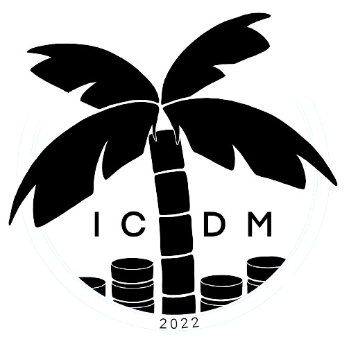

With the advent of big data era, multi-view data become ubiquitous in real world. How to mine the valuable information inside these multi-view data is of significant importance. As a key component of various intelligent data analyticor mining algorithms, multi-view representation learning attracted considerable attentions, especially along with the resurgence of deep learning.
Although multi-view representation learning has gained great progress, there are still some open problems that requires further investigation. For instance, most existing multi-view representation learning methods can not deal with missing values and unaligned views directly. Big data era calls for efficient multi-view representation learning methods. Deep multi-view representation learning methods have huge parameters to tune and lack interpretability. Compared with other machine learning tasks like classification, multi-view representation learning does not have a clear criterion or good evaluation. All these problems call for novel multi-view representation learning theory and algorithms.
Multi-view representation learning has been successfully applied to many applications including computer vision, natural language processing, speech recognition, signal processing. Extending its applications to more areas needs more novel advanced multi-view representation learning theory, algorithms and high-quality datasets.
This workshop aims to provide a forum for researchers and practitioners from different domains to share their new findings and communicate to advance the further development of multi-view representation learning.
Topics of interest include, but not limited to, the following:
- Multi-view metric learning, multi-view sparse coding, multi-view manifold learning,multi-view subspace learning, multi-view dimension reduction
- Multi-view representation learning for explanation
- Multi-view representation learning on data with noise or missing values
- Multi-view representation learning for prediction, clustering and recommendation
- Visualization of multi-view representation learning
- Efficient multi-view representation learning
- Multi-view representation evaluation or criteria
- New high-quality multi-view representation learning datasets
- Optimization for multi-view representation learning
- Multi-view representation learning and its applications in medical informatics, computervision, natural language processing, etc.
Submission information:
We invite both full papers (max 8 pages) describing mature work and short papers (max 5-6 pages) describing work-in-progress or case studies. Only original and high-quality papers formatted using the IEEE2-column format (
Latex Template), including the bibliography and any possible appendices will be considered for reviewing. Paper submission site is at
https://wi-lab.com/cyberchair/2022/icdm22/scripts/ws_submit.php?subarea=S.
Important dates:
- September 17, 2022: Workshop papers submission
- October 8, 2022: Notification of workshop papers acceptance to authors
- October 10, 2022: Camera-ready deadline and copyright form
- October 10, 2022: Early bird registration finishes
- November 28-December 1, 2022: Workshops date
All dates are 11:59pm Pacific Daylight Time.
Workshop Chair:
- Guoqing Chao, Schoolof Computer Science and Technology, Harbin Institute of Technology
- Xingquan Zhu, Departmentof Computer & Electrical Engineering and Computer Science, Florida Atlantic University
- Weiping Ding, Schoolof Information Science and Technology, Nantong University
- Jinbo Bi, School of Engineering, University of Connecticut
- Shiliang Sun, School of Computer Science and Technology, East China Normal University
Program Committee:
- Qingjiu Zhang, Shanghai Gene Automation Technology Co. Ltd
- Songtao Wang, National University of Singapore
- Zhijin Wang, University of Jimei
- Xijiong Xie, Ningbo University
- Yu-Jie Xiong,Shanghai University of Engineering Science
- Kezhi Zhang, Nanning Normal University